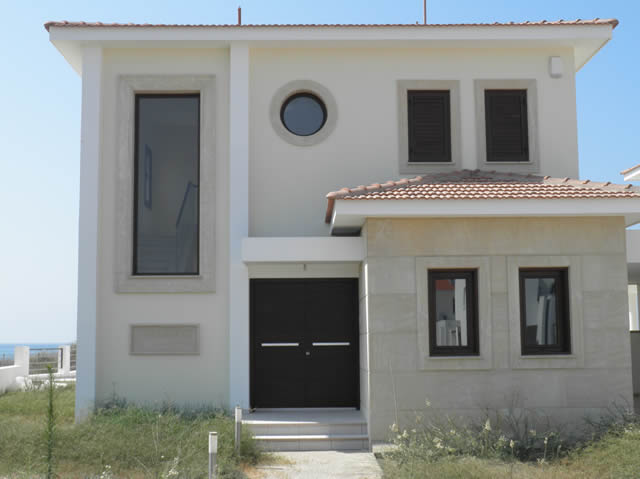
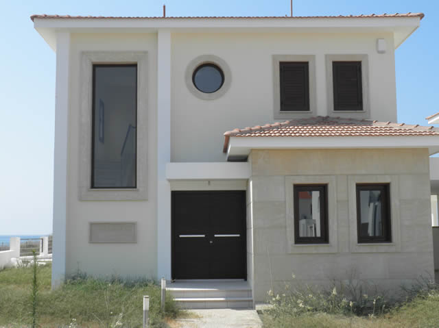
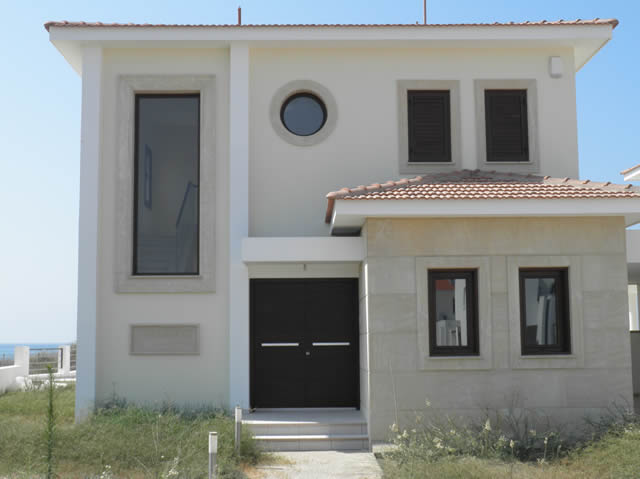

hello world

Go to camera 1
Go to camera 2
Go to camera 3
location tracking
location 2
mindar camera image tracker
mindar face tracking
mindar face tracking mashing
modal pop up
body
return
continue
 
